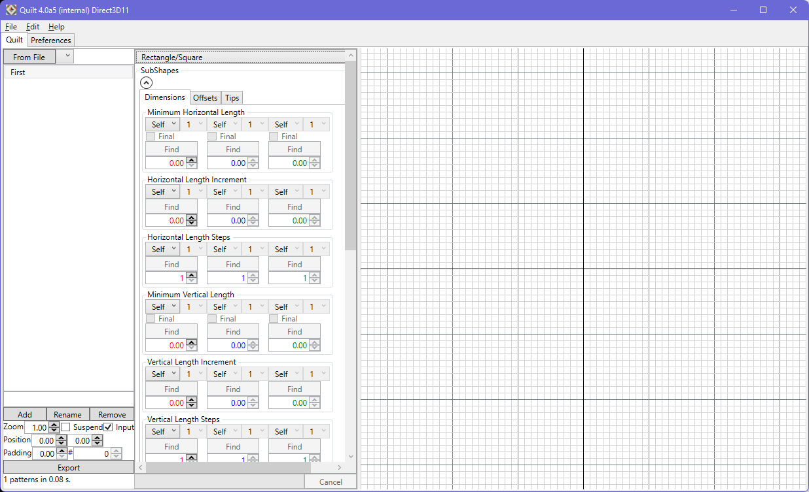
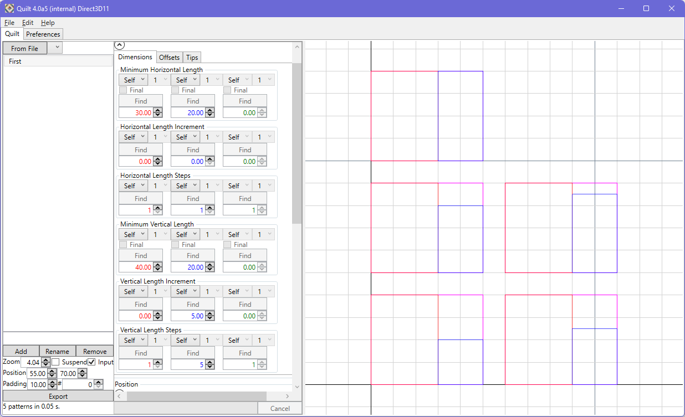
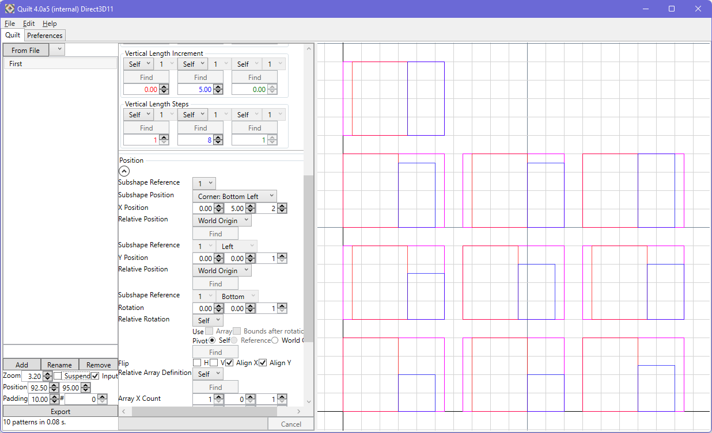
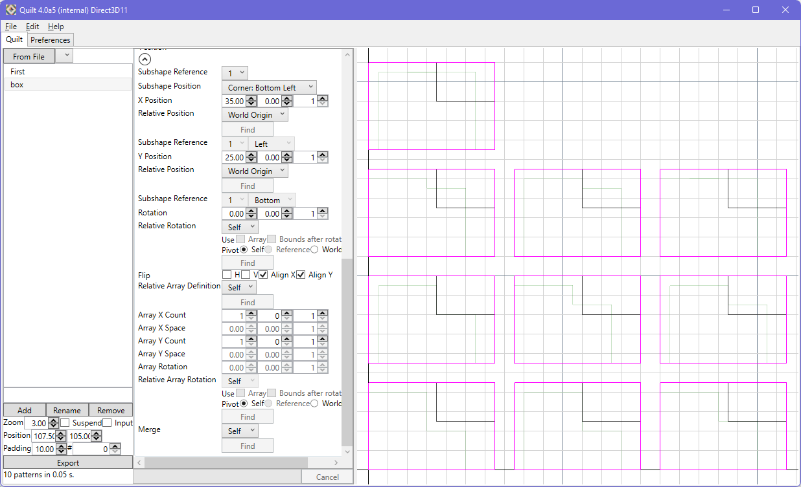
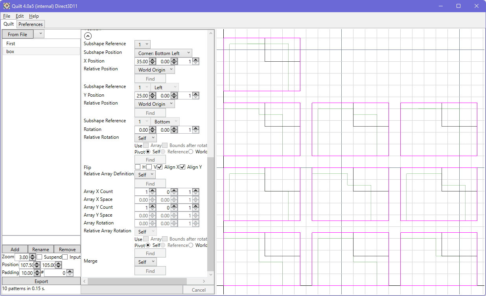
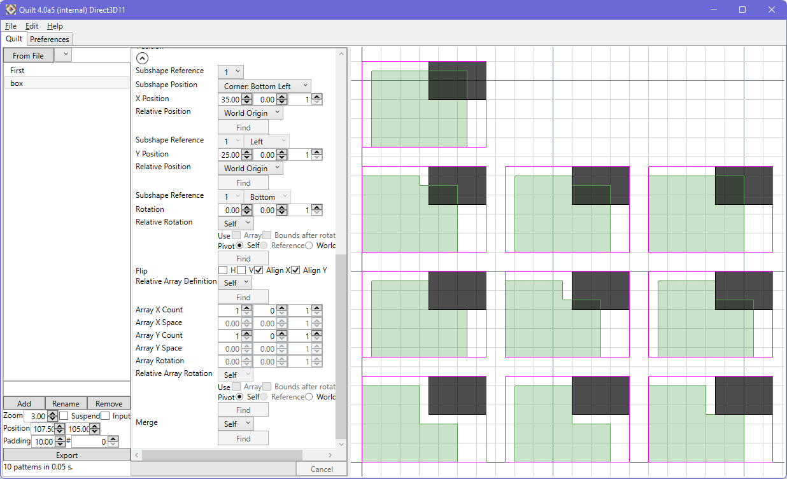

Each pattern element has several properties that need to be set. These properties fall into two categories, suggested by the user interface grouping. One group pertains to the shape; the other group relates to placement. For those familiar with Variance, the controls may look familiar.

Each pattern element is assigned a shape type. The choices will be reviewed later in this section. The shape definition for a pattern element is constructed using subshapes (quadrangles), which each have their own vertical and horizontal dimensions. For each such dimension, there is a minimum value, an increment value and a number of steps. These last two fields are what quilt uses to construct the range of patterns that encompass all unique results from the variations across all pattern elements. You can see this in the images below, where some padding has also been defined to more clearly separate the patterns.
In this case, there are 5 L instances that each have a different vertical length of the second component of the shape. These 5 instances (steps) correspond to the minimum value case, and then 4 increments of 5 units. The final 'L' is rectangular because the 20 nm minimum vertical length + (4 steps of 5 nm each) equals the 40 nm vertical length of the first component of the L.

Asking for more steps in this situation, as below, will not yield more patterns in the quilt, for two reasons. First, the L shape prohibits the vertical length of the second component exceeding that of the first. The second reason is that quilt ensures that it does not contain duplicate patterns - due to the L shape already having provided the rectangle from the maximum case, there is no further unique pattern available for this shape within the parameters that have been set.
Quilt always generates a full factorial of the variations in the defined pattern elements, both for the shape parameters and also for placement parameters. The system will also make a best effort to establish a grid layout - this does mean that the location of a specific pattern in the grid will change as the number of patterns changes.

In the image below, you can also see the viewport highlight of the selected element within the patterns.
By default, to aid setup, the subshape inputs to the pattern element are drawn. If 'Inputs' is deselected, the final output is drawn instead.

In the preferences tab, the opacity of the active and background pattern elements can be adjusted, to improve clarity as needed.

In the preferences tab, the fill option can be enabled to draw solid shapes instead of wireframes for the output. Input is always drawn using wires.
